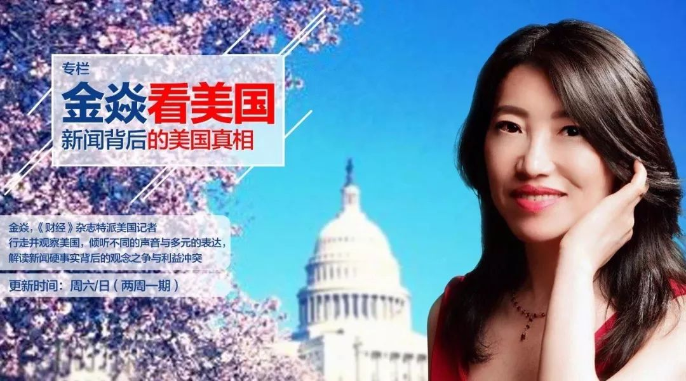

新冠疫情蔓延全美，特朗普连任增变数
原文链接 备份链接 应对重大公共卫生事件对美国大选影响举足轻重，福特总统在1976年连任失败被指一定程度上受到应对猪流感事件不利的影响，特朗普目前应对疫情的表现被美国媒体称为“灾难”，他能亡羊补牢，避免重蹈覆辙吗 文 |《财经》记者 王晓 …

当人类生存的主题被病毒、大流行病裹挟时，在白宫坐镇的特朗普、民间看好的疾病专家安东尼·福西和美联储主席鲍威尔纷纷出招，是老旧的套路还是定海神针，还未可知

文 |《财经》特派记者 金焱 发自华盛顿
编辑 | 苏琦
3月15日，周日。华盛顿多云而阴冷的天气。我的脸书上，朋友圈里有很多人都跑出去拍春天了。玉兰花、樱花不管阴郁的天空，不管疫情的侵袭，自顾自优雅地绽放；很多人都在转发各种疫情下的新现实：一些国家已经在周日封城、宵禁和限制出行了，欧洲包括丹麦、波兰、捷克等都关闭了边境……，原来的不可能都变得可能，政府的措施越来越极端。
微信上，得州大学达拉斯分校前副校长冯达旋用英语给我留了言。
他说，美国的社会动荡（social unrest）已然开始。他指的社会动荡指民众非理性大量购买大米，牛奶，卫生纸和其他必需品。冯达旋的原话是：“我真正担心的是，当确诊案例数量达到50万——根据指数模型，美国感染者的数量可能在3天内达到一百万，6天后达到二百万，那时美国可能会面临严重的政治地震！”
冯达旋告诉我他在学物理专业时明白了“指数级增长”深刻而简单的含义。不过他说的数字并没让我震惊，毕竟几天前美国权威媒体报道说，根据内部文件，美国疾控中心模型分析师马修·比格斯塔夫（Matthew Biggerstaff）在2月一场电话会议中，向全球约50个专家团队介绍了美国疫情发展的可能方向。比格斯塔夫通过模型，按照病毒的传播程度推演出4个结果。其中一个结果显示，美国预计将有1.6亿至2.14亿人会被感染，而疫情可能会持续1年。最坏情况下，全美将有170万人死于新冠肺炎。此外比格斯塔夫预测，将有240万至2100万美国人需要住院。
但当他说起自己的故事时，事情不妙的沉重感才磅礴而出。他说，越战期间他在大学读研。那时尽管反战情绪高涨，但美国社会却远比现在感觉更稳定，他甚至怀疑现在这种全国范围的忧虑情绪在一战和二战期间都没有过。但没有迹象表明，特朗普了解事态的严重性。
特朗普被一些美国华人称为大统领。病毒大敌当前，在白宫坐镇的特朗普显然是危机时刻带领美国人民制定大战略、走出危机的政治大统领。但特朗普面对冠状肺炎病毒的应对方式广受批评：信息不透明、充满了政治宣传且效率低下。
承袭好莱坞大片的套路，灾难袭来，美国的知识分子总会从书本里、实验室中跳出来拯救世界，这一次的民间救世剑客是美国国立卫生研究院（NIH）下的国家过敏和传染病研究所（NIAID）所长安东尼·S·福西（Anthony S. Fauci） 。
与公共卫生危机相伴相随的就是经济灾难。美联储主席鲍威尔3月15日傍晚霹雳行动震撼江湖，他所在的美国联邦储备委员会宣布，将联邦基金利率目标区间下调至零至0.25%的超低水平，还将购买7000亿美元的国债以及住房抵押贷款支持证券。被认为直接用了王炸。
当人类生存的主题被病毒、大流行病裹挟时，三剑客是老旧的套路还是定海神针，还未可知。
（全球经济在艰难地避免衰退，疫情对信心造成了又一次沉重打击。 图：金焱）
经济剑客的剑法
朋友给了我一个星巴克的咖啡充值卡，她寄出来时，星巴克还是那个大多数美国人每天打卡的所在，我收到朋友的卡时，星巴克已经关闭了2000多家门店
今年年初，美国工业生产就停滞不前。二月下旬，美国消费者信心的一枝独秀，被看成是全球经济唯一亮点。现在美国零售商关门的名单有一大长串，包括苹果、Patagonia，Warby Parker，Urban Outfitters，Glossier和Allbirds，而沃尔玛和Lululemon则限制了商店营业时间。
每年我感知春天的渠道，除了早春的花儿草儿，最主要的市井途径就是看到在街面上那些闲适地品酒聊天的人——饭店和酒吧在天气转暖时都会把窗子通通打开，或者把桌椅搬到街上。周六午时这样的场景在华盛顿的某些街区短暂一闪，就被寂静覆盖了。
实际上，街面上能见的，从电影院、宾馆、到大大小小的饭店、酒吧、商铺、美容美发店无一幸免，全部被疫情打击。
美股更是惊心动魄，3月9日和12日道琼斯工业指数的下跌都超过了2000点，美股猛烈下跌触及7%的一级市场熔断线，是1997年以来首次引发熔断机制。2月20日至3月12日，道琼斯工业指数、纳斯达克综合指数、标普500指数分别下跌27.76%、26.64%、26.74%，美股已进入技术性熊市。就像美国脱口秀明星所说，投资者看到股市如此惨烈，惊叫着“我的钱呀”！把头埋进手里，不敢看大盘；又突然意识到疫情蔓延，不能碰脸，又惊叫着“冠状病毒”！赶紧抬头，又看大盘再跌，再惊叫……。
很多看不见的风险也在不断积聚。美国正处于金融周期的高位，企业部门面临巨大的债务风险。受全球经济衰退风险和OPEC谈判破裂等影响，原油价格暴跌。
在如此艰难情境之下，正是美联储主席出剑之际。作为世界上最有权势的人——美联储主席需要实现最大就业、稳定物价、并与政府紧密沟通。我有很多经济学家朋友都在抱怨美联储主席的独立性在特朗普时代已经大打折扣，但新冠肺炎疫情在全球蔓延，经济增长面临风险时，能及时采取行动来支持经济的稳定和增长的也就只有美联储主席了。
这个经济上的救市剑客在3月3日打出第一套剑法，紧急降息50个基点。本来市场的期待是3月18日在议息会议上再次降息，但鲍威尔剑走偏风，将联邦基金利率目标区间大幅下调至0-0.25%。如此密集的降息在经济史上十分罕见。2008年金融危机后，美联储为挽救经济，曾一路降息至0-0.25%的超低水平，此后延续了7年的零利率政策。
美联储声明称，新冠疫情已给包括美国在内的很多国家的社会和经济造成损害。全球金融环境受到显著影响。本次降息将有助于支持美国经济、稳定就业市场、维持通胀目标。
除降息之外，美联储还宣布了7000亿美元大规模的量化宽松计划，包括几个月内回购至少5000亿美元国债，增持至少2000亿美元规模的抵押担保证券。这一举动也非同寻常。2008年金融危机后，美联储先后推出至少三轮量化宽松。首轮量化宽松，也就是金融体系最危急的时候，美联储直接购买“两房”债务及其抵押担保证券，此举支持金融机构信用，及时稳定了市场。
对美联储此次出招，花旗集团前全球外汇主管、深数宏观（DeepMacro）的联合创始人兼CEO杰弗瑞·杨（Jeffrey Young）给我解读说，这可能是寻求宣布效应（announcement effect）。
三剑客珠联璧合？
所谓的宣布效应，是因为特朗普在上周五宣布美国进入紧急状态后，众议院迅速通过了疫情救助法案，加上美联储放大招，起码政治经济上强强联合，在病毒面前形成珠联璧合之势。

这是丰满的理想。在现实中，美联储宣布降息后，10年期美国国债收益率下跌32个基点，美股道琼斯指数期货和标普500指数期货双双大幅下跌，再次熔断。
特朗普作为领导美国人民抗疫的大统领，他的主攻方向是遏制策略。比如在疫情暴发之初，他决定禁止中国航班来美，推动旅行禁令，以为关闭边境便可解决。结果一味防守，病毒步步紧逼。
在淡化危机规模的轻敌战术后，美国新冠确诊病例直接超过1300例，死亡病例达36例。
很多人曾在2月中旬问我，美国的疫情会有多严重。记得为了回答这个“将来时”的问题，我仔细察看了美国的疫情数字，回复说，美国问题不大，3月不会超过1500例——这还是给自己留了空间，本来我想说1200例。
特朗普对疫情的佛系剑术招来舆论批评后，特朗普并没有改变“防守型”打法。“为了防止新病例进入我们的国家”，特朗普推出了针对来自欧洲的旅客的旅行限制。美国国土安全部宣布入境限制措施，要求从欧洲返回的乘客只能从全美的13个指定机场之一入境，并且入境需要接受额外入境检查，包括回答健康状况、旅行史，并向地方卫生机构报备个人信息。
有评论说，特朗普总统宣布在未来的三十天内禁止大部分欧洲人进入美国，这是迄今他在对抗新冠病毒方面迈出的最重要一步。此举加速了他酝酿已久的与美国许多传统盟友的分离。
特朗普说要在当地时间13日午夜起，暂停美国与欧洲申根区26个成员国之间的旅行往来。后来特朗普又把英国和爱尔兰包括在内——据说他宣布禁止来自欧洲的人员入境美国之前，他们并没有得到美方的通知。
这一最后通谍先在欧洲机场引发混乱，混乱随后出现在芝加哥、纽约、达拉斯等指定的“分流”机场。有描述说，上百名从欧洲返回的乘客14日晚排成长队，将走廊挤得水泄不通。边检人员对此措手不及。有旅客抱怨，仅十分之一的边检窗口在工作，还有人自述，已被迫等待超过6个小时。在这样密集的环境里，乘客摩肩接踵，机场既没有为旅客测体温，也没有做新冠肺炎核酸检测。所谓的“额外入境检查”，仅仅是要求回答身体状况与旅游史，以及回家后遵守疾控中心指导、开展自我隔离。一名现场旅客悲观地说：“这就像是世界末日，我们一周以后都会被感染。”
在珠联璧合还有待观察时，与特朗普意见相左、又德高望重的NIAID所长安东尼·S·福西成为传播沟通政治化外的一股清流。2月25日接受采访时，福西警告说，如果新冠病毒大流行，旅行限制将变得“无关紧要”，因为“你无法将整个世界拒之门外”。
在特朗普宣称美国正在“迅速开发新冠病毒疫苗”，“基本上将以相当快的方式对此进行注射疫苗预防”后，福西表示，开发疫苗的过程可能需要长达一年至一年半的时间。
有一次我刚打开电视，特朗普正在谈病毒检测，一如以往，他的语言风格平实得难以让人接受，他说“test is beautiful”（检测是美好的），这让我开怀大笑。到了福西这里，他说，随着新型冠状病毒向全国传播，美国“没有真正准备好”执行所需的新冠病毒检测量。美国不能像其他国家那样迅速、轻松或以同样的数量处理新冠病毒检测，即使病毒已经扩散到44个州，这是“失败的”。
他说，美国在病毒检测方面面临着特别的困难。“任何人都能轻松进行（检测）的想法，其他国家和地区的人正在做的事情，我们没有为此做好准备。我认为应该这样做，但我们没有。”福西说。
福西说的话，都让我笑不出来。
福西的利剑就是专业知识，在谈及美国新冠肺炎疫情对日常生活的影响时长时，他说，持续的时间很难预测，但是从历史角度看，可能会持续长达8周。3月15日福西更是提出了美国全面封国的可能，他说，“即使要面对批评，我倾向采取更激进的措施。”

▲点击图片查看更多疫情报道
责编 | 蒋丽 lijiang@caijing.com.cn
本文为《财经》杂志原创文章，未经授权不得转载或建立镜像。如需转载，请在文末留言申请并获取授权。
原文链接 备份链接 应对重大公共卫生事件对美国大选影响举足轻重，福特总统在1976年连任失败被指一定程度上受到应对猪流感事件不利的影响，特朗普目前应对疫情的表现被美国媒体称为“灾难”，他能亡羊补牢，避免重蹈覆辙吗 文 |《财经》记者 王晓 …
原文链接 备份链接 据美国《纽约时报》汇总各州公共卫生部门公布的新冠肺炎确诊病例，截至当地时间5日下午，全美已有163例确诊病例，分布在18个州。华盛顿州公共卫生部门5日公布了一例死亡病例，使得全美死亡病例达到了12例。 数据显示，美国 …
原文链接 备份链接 目前包括中国大陆在内，全球已经有41个国家和地区出现了疫情，其中，韩国是中国大陆之外疫情蔓延最快的国家。 尽管如此，世卫组织不希望在“没有谨慎和清晰地分析事实情况之前”仓促宣布疫情为全球“大流行病” 文 |《财经》特派 …
原文链接 备份链接 编者按： 今天有两个新消息：好消息是，特朗普没感染，坏消息是，前一条消息并没有让美国人松一口气。相反，这两天美国的疫情紧张程度骤增，而这种紧张又通过各种社交媒体实时地传播到世界各地。 美国内部对于特朗普政府的疫情反应和 …
原文链接 备份链接 以下文章来源于我们来补课 ，作者寒潭清 [我们来补课 成人版十万个为什么，重拾你对世界的好奇心](#) 病毒在地球上存在了数十亿年，早已构成生态系统不可或缺的一部分，想彻底消灭病毒比消灭全部虫子更不现实，此次新冠肺炎疫 …